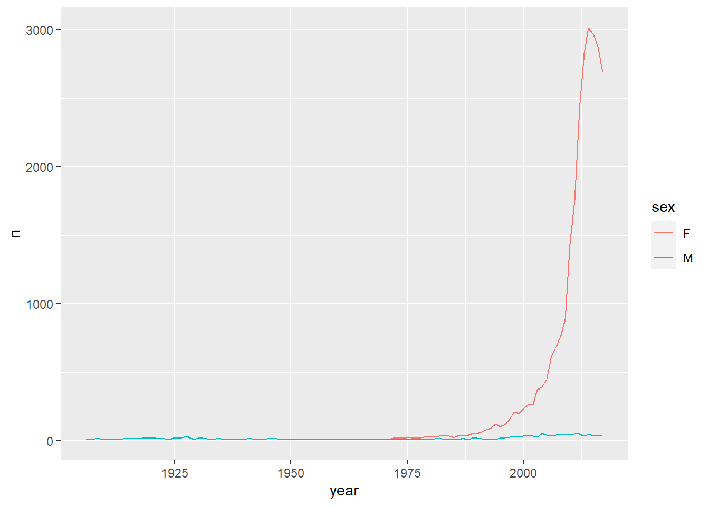

需要安裝babynames,ggplot2require(tidyr)
require(dplyr) # data_frameFrom http://stackoverflow.com/questions/1181060
require(tidyr)Loading required package: tidyrWarning: package 'tidyr' was built under R version 4.0.3require(dplyr) # data_frameLoading required package: dplyrWarning: package 'dplyr' was built under R version 4.0.3
Attaching package: 'dplyr'The following objects are masked from 'package:stats':
filter, lagThe following objects are masked from 'package:base':
intersect, setdiff, setequal, unionstocks <- data_frame(
time = as.Date('2009-01-01') + 0:9,
X = rnorm(10, 0, 1),
Y = rnorm(10, 0, 2),
Z = rnorm(10, 0, 4)
)Warning: `data_frame()` is deprecated as of tibble 1.1.0.
Please use `tibble()` instead.
This warning is displayed once every 8 hours.
Call `lifecycle::last_warnings()` to see where this warning was generated.dset1 <- head(stocks)
knitr::kable(dset1, format = "html")| time | X | Y | Z |
|---|---|---|---|
| 2009-01-01 | -1.400 | -1.11 | 1.87 |
| 2009-01-02 | 0.255 | 1.26 | 1.45 |
| 2009-01-03 | -2.437 | 4.13 | -5.22 |
| 2009-01-04 | -0.006 | -3.26 | 2.95 |
| 2009-01-05 | 0.622 | 1.02 | 7.55 |
| 2009-01-06 | 1.148 | -3.73 | -0.39 |
gather(stocks, stock, price, -time)# A tibble: 30 x 3
time stock price
<date> <chr> <dbl>
1 2009-01-01 X -1.40
2 2009-01-02 X 0.255
3 2009-01-03 X -2.44
4 2009-01-04 X -0.00557
5 2009-01-05 X 0.622
6 2009-01-06 X 1.15
7 2009-01-07 X -1.82
8 2009-01-08 X -0.247
9 2009-01-09 X -0.244
10 2009-01-10 X -0.283
# ... with 20 more rowsstocks %>% gather(stock, price, -time)# A tibble: 30 x 3
time stock price
<date> <chr> <dbl>
1 2009-01-01 X -1.40
2 2009-01-02 X 0.255
3 2009-01-03 X -2.44
4 2009-01-04 X -0.00557
5 2009-01-05 X 0.622
6 2009-01-06 X 1.15
7 2009-01-07 X -1.82
8 2009-01-08 X -0.247
9 2009-01-09 X -0.244
10 2009-01-10 X -0.283
# ... with 20 more rowsdset1 <- head(stocks)
knitr::kable(dset1, format = "html")| time | X | Y | Z |
|---|---|---|---|
| 2009-01-01 | -1.400 | -1.11 | 1.87 |
| 2009-01-02 | 0.255 | 1.26 | 1.45 |
| 2009-01-03 | -2.437 | 4.13 | -5.22 |
| 2009-01-04 | -0.006 | -3.26 | 2.95 |
| 2009-01-05 | 0.622 | 1.02 | 7.55 |
| 2009-01-06 | 1.148 | -3.73 | -0.39 |
設定css
writeLines("td, th { padding : 6px } th { background-color : brown ; color : white; border : 1px solid white; } td { color : brown ; border : 1px solid brown }", con = "tableStyle.css")stocks <- data_frame(
time = as.Date('2009-01-01') + 0:9,
X = rnorm(10, 0, 1),
Y = rnorm(10, 0, 2),
Z = rnorm(10, 0, 4)
)
dset1 <- head(stocks)
knitr::kable(dset1, format = "html")| time | X | Y | Z |
|---|---|---|---|
| 2009-01-01 | 0.935 | 0.140 | 3.448 |
| 2009-01-02 | 0.176 | -1.278 | -0.973 |
| 2009-01-03 | 0.244 | -0.100 | -0.824 |
| 2009-01-04 | 1.624 | -0.503 | 0.077 |
| 2009-01-05 | 0.112 | 0.890 | 0.118 |
| 2009-01-06 | -0.134 | 5.511 | 2.199 |
demo<-gather(stocks, stock, price, -time)
dset1 <- head(demo)
knitr::kable(dset1, format = "html")| time | stock | price |
|---|---|---|
| 2009-01-01 | X | 0.935 |
| 2009-01-02 | X | 0.176 |
| 2009-01-03 | X | 0.244 |
| 2009-01-04 | X | 1.624 |
| 2009-01-05 | X | 0.112 |
| 2009-01-06 | X | -0.134 |
wide <- data_frame(
time = as.Date('2009-01-01') + 0:9,
X = rnorm(10, 0, 1),
Y = rnorm(10, 0, 2),
Z = rnorm(10, 0, 4)
)
long <- gather(wide,stock,price,-time)
head(long)# A tibble: 6 x 3
time stock price
<date> <chr> <dbl>
1 2009-01-01 X 1.07
2 2009-01-02 X -0.665
3 2009-01-03 X 1.11
4 2009-01-04 X -0.246
5 2009-01-05 X -1.18
6 2009-01-06 X -0.976wide2 <-spread(long,stock,price)
head(wide2)# A tibble: 6 x 4
time X Y Z
<date> <dbl> <dbl> <dbl>
1 2009-01-01 1.07 -2.94 7.70
2 2009-01-02 -0.665 0.568 5.19
3 2009-01-03 1.11 2.67 3.00
4 2009-01-04 -0.246 0.473 2.22
5 2009-01-05 -1.18 2.64 -2.19
6 2009-01-06 -0.976 1.05 4.44更多參考: cookbook for R
函數名 功能
row_number 排序,如果數值一樣,則靠前出現的元素排名在前,例如(3,3) 則 1,2
min_rank 排序,如果數值一樣,則都是同一等級，但是，佔用下一名次。例如
data<-c(3,3,4)
data[1] 3 3 4min_rank(data)[1] 1 1 3不佔用下一名次data<-c(3,3,4)
data[1] 3 3 4dense_rank(data)[1] 1 1 2percent_rank 按百分比的排名
percent_rank = (min_rank(x) - 1)/(sum(!is.na(x)) - 1)
cume_dist 累計分佈
ntile : floor(n * (row_number(x) - 1)/len + 1)
data<-round(runif(10)*10)
pr<-percent_rank(data)
cd<-cume_dist(data)
mr<-min_rank(data)
df<-data.frame(data,pr,mr,cd)
arrange(df,data) data pr mr cd
1 1 0.000 1 0.3
2 1 0.000 1 0.3
3 1 0.000 1 0.3
4 2 0.333 4 0.5
5 2 0.333 4 0.5
6 5 0.556 6 0.6
7 7 0.667 7 0.8
8 7 0.667 7 0.8
9 9 0.889 9 1.0
10 9 0.889 9 1.0note:
(2,3,3,3,3,4,5,6,6,9)
| 1 | 2 | 3 | 4 | 5 | 6 | 7 | 8 | 9 |
|---|---|---|---|---|---|---|---|---|
| 0 | 1 | 4 | 1 | 1 | 2 | 0 | 0 | 1 |
library(babynames)
babynames# A tibble: 1,924,665 x 5
year sex name n prop
<dbl> <chr> <chr> <int> <dbl>
1 1880 F Mary 7065 0.0724
2 1880 F Anna 2604 0.0267
3 1880 F Emma 2003 0.0205
4 1880 F Elizabeth 1939 0.0199
5 1880 F Minnie 1746 0.0179
6 1880 F Margaret 1578 0.0162
7 1880 F Ida 1472 0.0151
8 1880 F Alice 1414 0.0145
9 1880 F Bertha 1320 0.0135
10 1880 F Sarah 1288 0.0132
# ... with 1,924,655 more rowsbabynames %>% select(-prop)# A tibble: 1,924,665 x 4
year sex name n
<dbl> <chr> <chr> <int>
1 1880 F Mary 7065
2 1880 F Anna 2604
3 1880 F Emma 2003
4 1880 F Elizabeth 1939
5 1880 F Minnie 1746
6 1880 F Margaret 1578
7 1880 F Ida 1472
8 1880 F Alice 1414
9 1880 F Bertha 1320
10 1880 F Sarah 1288
# ... with 1,924,655 more rowsbabynames %>% select(year:n)# A tibble: 1,924,665 x 4
year sex name n
<dbl> <chr> <chr> <int>
1 1880 F Mary 7065
2 1880 F Anna 2604
3 1880 F Emma 2003
4 1880 F Elizabeth 1939
5 1880 F Minnie 1746
6 1880 F Margaret 1578
7 1880 F Ida 1472
8 1880 F Alice 1414
9 1880 F Bertha 1320
10 1880 F Sarah 1288
# ... with 1,924,655 more rows# starts_with(), ends_with(), contains()
babynames %>% filter(name == "Hadley")# A tibble: 163 x 5
year sex name n prop
<dbl> <chr> <chr> <int> <dbl>
1 1906 M Hadley 6 0.0000416
2 1908 M Hadley 16 0.0000962
3 1909 M Hadley 14 0.0000792
4 1910 M Hadley 5 0.0000240
5 1911 M Hadley 9 0.0000373
6 1912 M Hadley 11 0.0000244
7 1913 M Hadley 10 0.0000186
8 1914 M Hadley 15 0.0000220
9 1915 M Hadley 14 0.0000159
10 1916 M Hadley 14 0.0000152
# ... with 153 more rowsbabynames %>% filter(year == 1900, sex == "F")# A tibble: 2,224 x 5
year sex name n prop
<dbl> <chr> <chr> <int> <dbl>
1 1900 F Mary 16706 0.0526
2 1900 F Helen 6343 0.0200
3 1900 F Anna 6114 0.0192
4 1900 F Margaret 5304 0.0167
5 1900 F Ruth 4765 0.0150
6 1900 F Elizabeth 4096 0.0129
7 1900 F Florence 3920 0.0123
8 1900 F Ethel 3896 0.0123
9 1900 F Marie 3856 0.0121
10 1900 F Lillian 3414 0.0107
# ... with 2,214 more rowsbabynames %>% filter(year == 2013, sex == "F")# A tibble: 19,231 x 5
year sex name n prop
<dbl> <chr> <chr> <int> <dbl>
1 2013 F Sophia 21213 0.0110
2 2013 F Emma 20936 0.0109
3 2013 F Olivia 18414 0.00957
4 2013 F Isabella 17631 0.00916
5 2013 F Ava 15249 0.00793
6 2013 F Mia 13147 0.00683
7 2013 F Emily 13124 0.00682
8 2013 F Abigail 12405 0.00645
9 2013 F Madison 10591 0.00551
10 2013 F Elizabeth 9448 0.00491
# ... with 19,221 more rowsbabynames %>%
mutate(
first = tolower(substr(name, 1, 1)),
last = substr(name, nchar(name), nchar(name))
)# A tibble: 1,924,665 x 7
year sex name n prop first last
<dbl> <chr> <chr> <int> <dbl> <chr> <chr>
1 1880 F Mary 7065 0.0724 m y
2 1880 F Anna 2604 0.0267 a a
3 1880 F Emma 2003 0.0205 e a
4 1880 F Elizabeth 1939 0.0199 e h
5 1880 F Minnie 1746 0.0179 m e
6 1880 F Margaret 1578 0.0162 m t
7 1880 F Ida 1472 0.0151 i a
8 1880 F Alice 1414 0.0145 a e
9 1880 F Bertha 1320 0.0135 b a
10 1880 F Sarah 1288 0.0132 s h
# ... with 1,924,655 more rowsbabynames %>%
arrange(desc(prop))# A tibble: 1,924,665 x 5
year sex name n prop
<dbl> <chr> <chr> <int> <dbl>
1 1880 M John 9655 0.0815
2 1881 M John 8769 0.0810
3 1880 M William 9532 0.0805
4 1883 M John 8894 0.0791
5 1881 M William 8524 0.0787
6 1882 M John 9557 0.0783
7 1884 M John 9388 0.0765
8 1882 M William 9298 0.0762
9 1886 M John 9026 0.0758
10 1885 M John 8756 0.0755
# ... with 1,924,655 more rowsbabynames %>%
summarise(n = sum(n))# A tibble: 1 x 1
n
<int>
1 348120517分組指令不會影響到原來的資料
head(mtcars) mpg cyl disp hp drat wt qsec vs am gear carb
Mazda RX4 21.0 6 160 110 3.90 2.62 16.5 0 1 4 4
Mazda RX4 Wag 21.0 6 160 110 3.90 2.88 17.0 0 1 4 4
Datsun 710 22.8 4 108 93 3.85 2.32 18.6 1 1 4 1
Hornet 4 Drive 21.4 6 258 110 3.08 3.21 19.4 1 0 3 1
Hornet Sportabout 18.7 8 360 175 3.15 3.44 17.0 0 0 3 2
Valiant 18.1 6 225 105 2.76 3.46 20.2 1 0 3 1str(mtcars)'data.frame': 32 obs. of 11 variables:
$ mpg : num 21 21 22.8 21.4 18.7 18.1 14.3 24.4 22.8 19.2 ...
$ cyl : num 6 6 4 6 8 6 8 4 4 6 ...
$ disp: num 160 160 108 258 360 ...
$ hp : num 110 110 93 110 175 105 245 62 95 123 ...
$ drat: num 3.9 3.9 3.85 3.08 3.15 2.76 3.21 3.69 3.92 3.92 ...
$ wt : num 2.62 2.88 2.32 3.21 3.44 ...
$ qsec: num 16.5 17 18.6 19.4 17 ...
$ vs : num 0 0 1 1 0 1 0 1 1 1 ...
$ am : num 1 1 1 0 0 0 0 0 0 0 ...
$ gear: num 4 4 4 3 3 3 3 4 4 4 ...
$ carb: num 4 4 1 1 2 1 4 2 2 4 ...by_cyl <- mtcars %>% group_by(cyl)
head(by_cyl)# A tibble: 6 x 11
# Groups: cyl [3]
mpg cyl disp hp drat wt qsec vs am gear carb
<dbl> <dbl> <dbl> <dbl> <dbl> <dbl> <dbl> <dbl> <dbl> <dbl> <dbl>
1 21 6 160 110 3.9 2.62 16.5 0 1 4 4
2 21 6 160 110 3.9 2.88 17.0 0 1 4 4
3 22.8 4 108 93 3.85 2.32 18.6 1 1 4 1
4 21.4 6 258 110 3.08 3.22 19.4 1 0 3 1
5 18.7 8 360 175 3.15 3.44 17.0 0 0 3 2
6 18.1 6 225 105 2.76 3.46 20.2 1 0 3 1str(by_cyl)tibble [32 x 11] (S3: grouped_df/tbl_df/tbl/data.frame)
$ mpg : num [1:32] 21 21 22.8 21.4 18.7 18.1 14.3 24.4 22.8 19.2 ...
$ cyl : num [1:32] 6 6 4 6 8 6 8 4 4 6 ...
$ disp: num [1:32] 160 160 108 258 360 ...
$ hp : num [1:32] 110 110 93 110 175 105 245 62 95 123 ...
$ drat: num [1:32] 3.9 3.9 3.85 3.08 3.15 2.76 3.21 3.69 3.92 3.92 ...
$ wt : num [1:32] 2.62 2.88 2.32 3.21 3.44 ...
$ qsec: num [1:32] 16.5 17 18.6 19.4 17 ...
$ vs : num [1:32] 0 0 1 1 0 1 0 1 1 1 ...
$ am : num [1:32] 1 1 1 0 0 0 0 0 0 0 ...
$ gear: num [1:32] 4 4 4 3 3 3 3 4 4 4 ...
$ carb: num [1:32] 4 4 1 1 2 1 4 2 2 4 ...
- attr(*, "groups")= tibble [3 x 2] (S3: tbl_df/tbl/data.frame)
..$ cyl : num [1:3] 4 6 8
..$ .rows: list<int> [1:3]
.. ..$ : int [1:11] 3 8 9 18 19 20 21 26 27 28 ...
.. ..$ : int [1:7] 1 2 4 6 10 11 30
.. ..$ : int [1:14] 5 7 12 13 14 15 16 17 22 23 ...
.. ..@ ptype: int(0)
..- attr(*, ".drop")= logi TRUE但是分組結果會影響其他dplyr指令的計算結果:
by_cyl %>% summarise(
disp = mean(disp),
hp = mean(hp)
)`summarise()` ungrouping output (override with `.groups` argument)# A tibble: 3 x 3
cyl disp hp
<dbl> <dbl> <dbl>
1 4 105. 82.6
2 6 183. 122.
3 8 353. 209. by_cyl %>% filter(disp == max(disp))# A tibble: 3 x 11
# Groups: cyl [3]
mpg cyl disp hp drat wt qsec vs am gear carb
<dbl> <dbl> <dbl> <dbl> <dbl> <dbl> <dbl> <dbl> <dbl> <dbl> <dbl>
1 21.4 6 258 110 3.08 3.22 19.4 1 0 3 1
2 24.4 4 147. 62 3.69 3.19 20 1 0 4 2
3 10.4 8 472 205 2.93 5.25 18.0 0 0 3 4What other summary functions can we use inside the summarize() verb? Any function in R that takes a vector of values and returns just one. Here are just a few:
mean(): the mean AKA the average
sd(): the standard deviation, which is a measure of spread
min() and max(): the minimum and maximum values respectively
IQR(): Interquartile range
sum(): the sum
n(): a count of the number of rows/observations in each group. This particular summary function will make more sense when group_by() is covered in Section 5.5.
產生資料
year=c(1990, 1991, 1990, 1991, 1990, 1991, 1990, 1991, 1990, 1991)
sex=c("f", "f", "f", "f", "f", "m", "m", "m", "m", "m")
#value=c(1, 2, 3, 4, 5, 1, 2, 3, 4, 5)
value=c(1, 2, 3, 4, 5, 6, 7, 8, 9, 10)
df<-data.frame(sex,year,value)
head(df) sex year value
1 f 1990 1
2 f 1991 2
3 f 1990 3
4 f 1991 4
5 f 1990 5
6 m 1991 6df<-group_by(df,sex)
ndf<-mutate(df,rank=min_rank(value))
arrange(ndf,sex)# A tibble: 10 x 4
# Groups: sex [2]
sex year value rank
<chr> <dbl> <dbl> <int>
1 f 1990 1 1
2 f 1991 2 2
3 f 1990 3 3
4 f 1991 4 4
5 f 1990 5 5
6 m 1991 6 1
7 m 1990 7 2
8 m 1991 8 3
9 m 1990 9 4
10 m 1991 10 5ndf<-df %>%
group_by(sex) %>%
mutate(rank = min_rank(value))
arrange(ndf,sex)# A tibble: 10 x 4
# Groups: sex [2]
sex year value rank
<chr> <dbl> <dbl> <int>
1 f 1990 1 1
2 f 1991 2 2
3 f 1990 3 3
4 f 1991 4 4
5 f 1990 5 5
6 m 1991 6 1
7 m 1990 7 2
8 m 1991 8 3
9 m 1990 9 4
10 m 1991 10 5問題: 1. 如何知道min-rank(value)中的value 是全局或是欄位? hint: rm(value) 2. 會出現甚麼結果
df %>% group_by(sex) %>%str()
nb <-babynames %>%
group_by(name)babynames %>%
group_by(name) %>%
summarise(n = sum(n))`summarise()` ungrouping output (override with `.groups` argument)# A tibble: 97,310 x 2
name n
<chr> <int>
1 Aaban 107
2 Aabha 35
3 Aabid 10
4 Aabir 5
5 Aabriella 32
6 Aada 5
7 Aadam 254
8 Aadan 130
9 Aadarsh 199
10 Aaden 4658
# ... with 97,300 more rowsbabynames %>%
filter(name %in% c("John", "Mary", "William")) %>%
group_by(name, sex) %>%
summarise(n = sum(n))`summarise()` regrouping output by 'name' (override with `.groups` argument)# A tibble: 6 x 3
# Groups: name [3]
name sex n
<chr> <chr> <int>
1 John F 21676
2 John M 5115466
3 Mary F 4123200
4 Mary M 15160
5 William F 15949
6 William M 4102604babynames %>%
group_by(year, sex) %>%
mutate(rank = min_rank(desc(n))) %>%
tail()# A tibble: 6 x 6
# Groups: year, sex [1]
year sex name n prop rank
<dbl> <chr> <chr> <int> <dbl> <int>
1 2017 M Zyhier 5 0.00000255 12171
2 2017 M Zykai 5 0.00000255 12171
3 2017 M Zykeem 5 0.00000255 12171
4 2017 M Zylin 5 0.00000255 12171
5 2017 M Zylis 5 0.00000255 12171
6 2017 M Zyrie 5 0.00000255 12171babynames %>%
filter(name == "Hadley") %>%
group_by(sex) %>%
summarise(n = sum(n))`summarise()` ungrouping output (override with `.groups` argument)# A tibble: 2 x 2
sex n
<chr> <int>
1 F 26708
2 M 1883library(ggplot2)
babynames %>%
filter(name == "Hadley") %>%
ggplot(aes(year, n)) +
geom_line(aes(colour = sex))